Le package {bdxmetroidentity} fournit des outils de design dédiés aux productions data du datalab de Bordeaux Métropole. Il inclut :
- Des fonctionnalités pour associer un thème light/dark à des graphiques ggplot2,
- Des fonctionnalités pour associer un thème light/dark à des rapports et des vignettes R Markdown,
- Des fonctionnalités pour associer un thème light/dark à des apps Shiny.
Il inclut également des fonctionnalités supplémentaires (installation de la police de caractères Roboto, gestion de pictogrammes au format SVG, etc.).
Le site du package est disponible ici : http://bdxmetropole.pages.thinkr.fr/bdxmetroidentity/
Installation
Pour installer le package depuis GitLab, vous pouvez lancer le script suivant :
# install.packages("remotes")
remotes::install_git(url = "https://forge.thinkr.fr/bdxmetropole/bdxmetroidentity")Vignettes
- Installation du package et dépendances
- Intégration de la charte graphique dans les graphiques {ggplot2}
- Intégration de la charte graphique dans les rapports R Markdown
- Intégration de la charte graphique dans les apps Shiny
- Chargement de la font Roboto
- Utilisation des pictogrammes
Ouvrir le pkgdown :
bdxmetroidentity::open_pkgdown()Exemples
Rapports HTML
browseURL(system.file("rmarkdown", "rmd_template_light.html", package = "bdxmetroidentity"))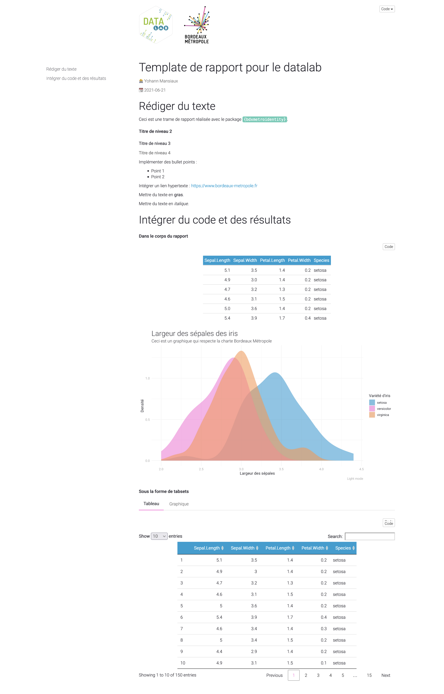
browseURL(system.file("rmarkdown", "rmd_template_dark.html", package = "bdxmetroidentity"))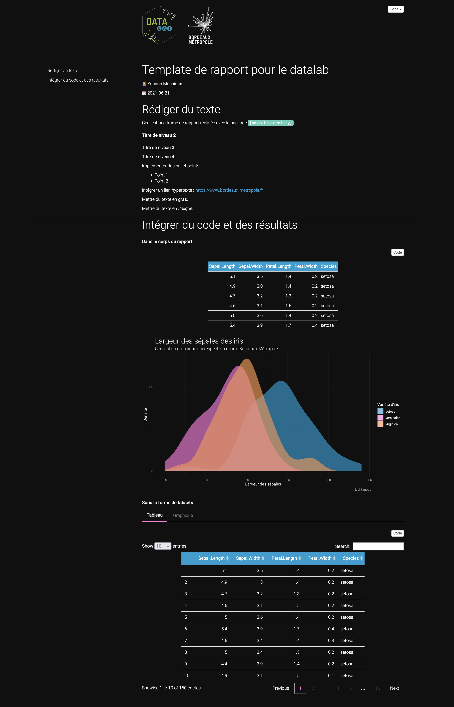
Apps Shiny
shiny::runApp(system.file("shiny", "shiny_template_fluidpage.R", package = "bdxmetroidentity")) 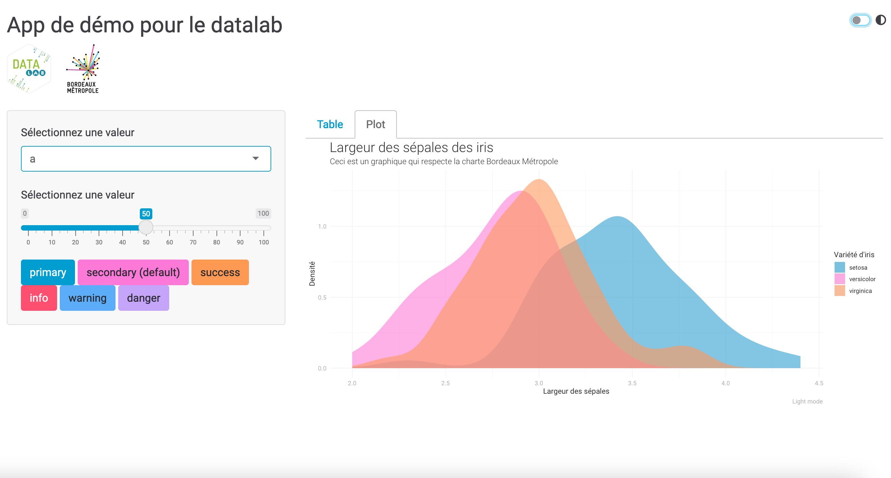
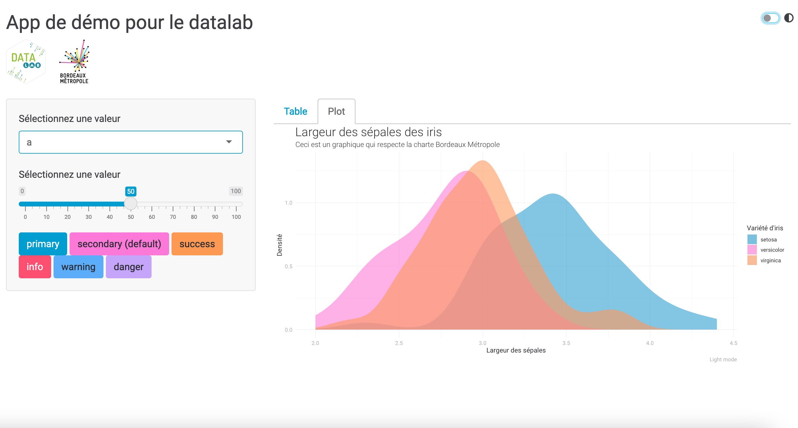
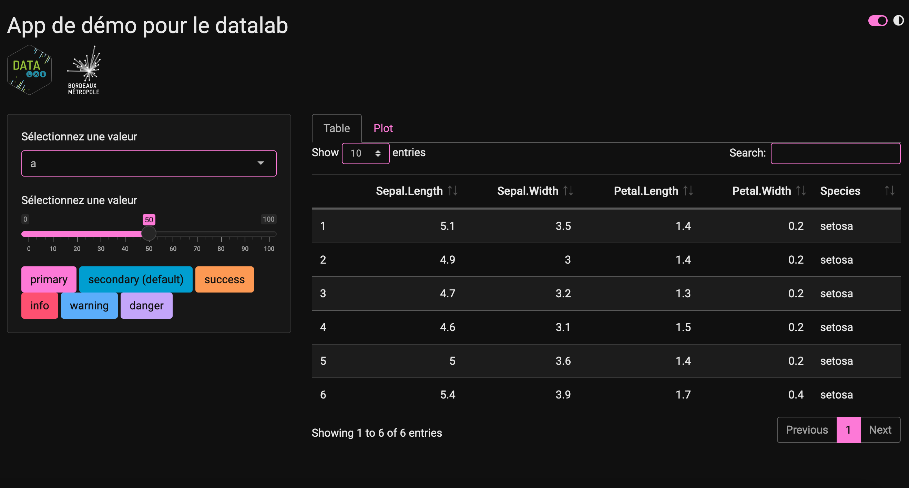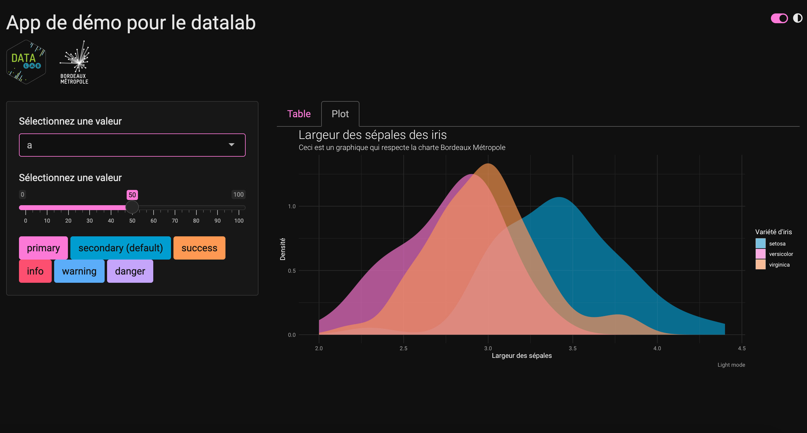
shiny::runApp(system.file("shiny", "shiny_template_navbarpage.R", package = "bdxmetroidentity"))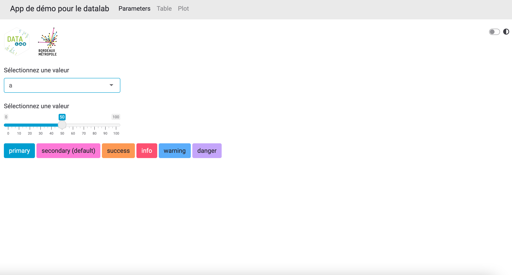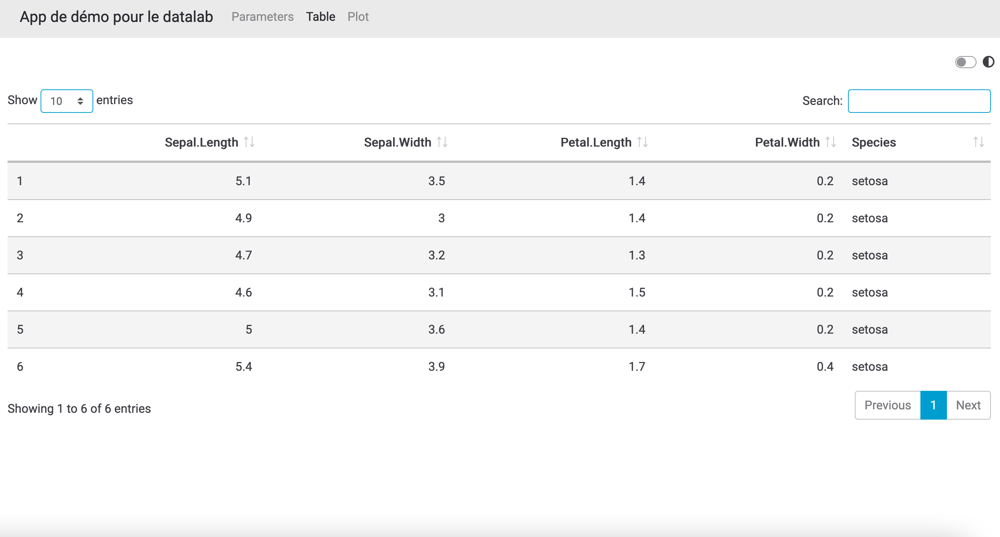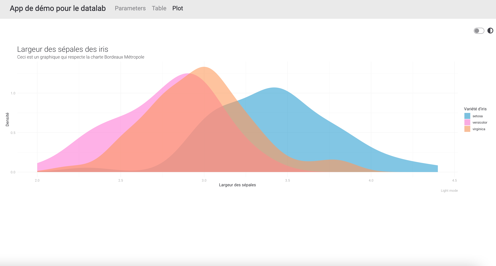
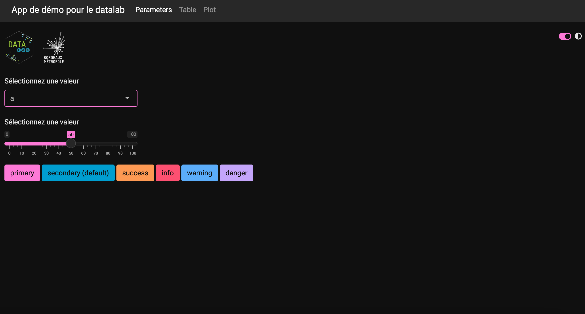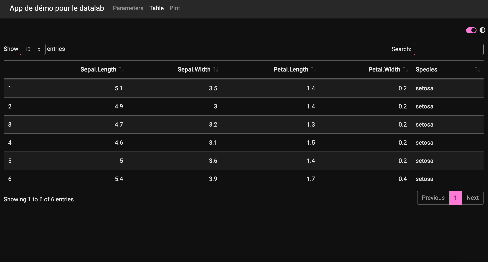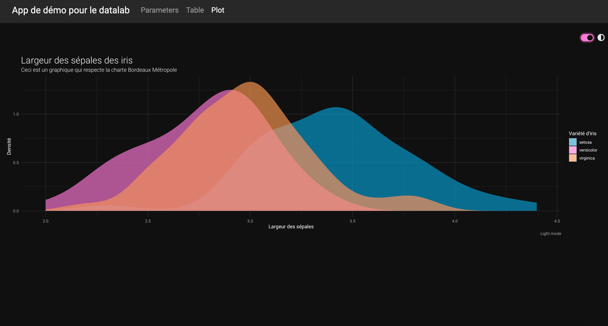